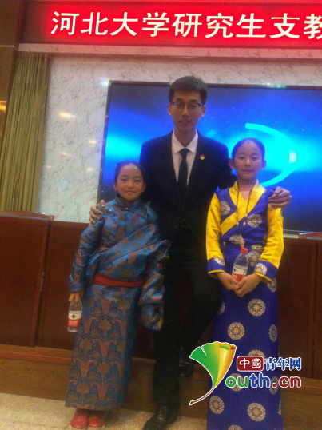
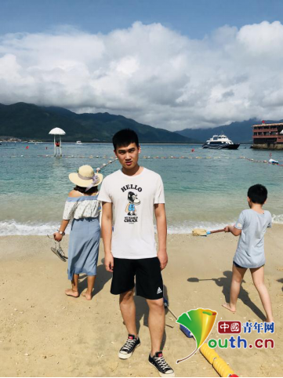
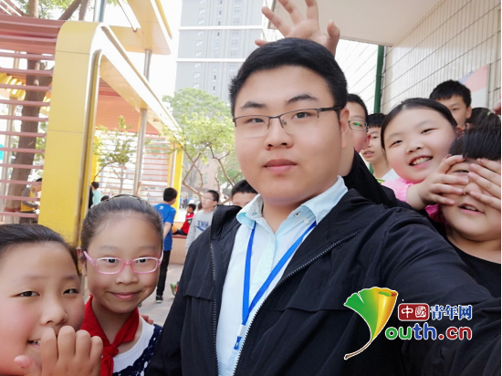

河北大学第十三届研支团薪火相传建功新时代
桂电志愿者网 日期：2018-07-31 来源：中国青年网
中国青年网北京7月31日电（记者李川）青春志愿，薪火相传。从2006年至今，河北大学已连续派出13届共计143名志愿者奔赴青海省共和县、贵州省六枝特区及河北省阜平县开展扶贫支教志愿服务。十三年的积淀，十三年的传承，一届届志愿者、一批批河大人薪火相传，用爱为西部山区的孩子们搭建桥梁。2018年是中国青年志愿者扶贫接力计划研究生支教团成立二十周年，今年盛夏，河北大学第十三届研支团共18名志愿者带着新时代的责任与使命奔赴祖国西部建功立业，谱写新时代的青春华章。河北大学第十三届支教团成员介绍：

郭聚良，男，汉族，中共党员，河北石家庄人，现服务于贵州省六盘水市盘县红果街道沙陀小学。研究生（推免）期间将就读金融硕士专业，现任河北大学第十三届研究生支教团团长。
本科期间担任学院学生会主席，14级环境科学班长等职务。大学期间多次参加全国类型的学术、创业比赛以及公益活动。先后获得全国化工设计大赛全国二等奖、参加全国台湾青年千人夏令营，并获得“杰出志愿者”称号、创青春大学生创业大赛河北省特等奖。获得河北省优秀毕业生，省级优秀学生干部，暑期社会实践优秀个人、全国化工大赛华北赛区二等奖、校级优秀学生干部、校级三好学生等荣誉称号。同时爱好运动，曾获得校运动会男子跳高第一名、男子4*400第五名、普通组跳高第三名、三级跳远第三名，男子篮球赛校级乙组第二名等等奖项。
选择支教是一件一生都不会后悔的决定，趁着年轻，多多磨练自己，就像习主席所说：青年时期多经历一点摔打，挫折，考验，有利于走好一生的路！“白日不到处，青春恰自来、苔花如米小，也学牡丹开。” 人生没有白走的路，用一年的时间体验国情，沉淀自己，奉献青春。
支教宣言：青春须早为，岂能长少年。

胡晨，男，汉族，中共党员，河北沧州人，现服务于青海省海南藏族自治州共和县江西沟乡民族寄宿制小学。研究生（推免）期间将在经济学院学习金融专业，现任河北大学第十三届研究生支教团青海省江西沟服务队队长。
在校期间曾担任经济学院学生会主席，曾获得河北省优秀学生干部、保定市大学生宣讲团“社会主义核心价值观”宣讲活动先进个人、河北大学优秀学生干部、河北大学三好学生、河北大学二等奖学金、2017年“挑战杯”河北省大学生学术科技竞赛省级特等奖、2017年河北大学大学生创新创业省级结项、第三届“互联网+”大学生创新创业省赛铜奖，与此同时积极参加社会实践与志愿服务活动，参与团队多次获得保定市暑期社会实践先进集体、河北省暑期文化科技卫生“三下乡”优秀团队等荣誉称号。
支教宣言：脚下有泥土，前行有力量。

巩建宇，男，汉族，中共党员，河北邢台人，现服务于青海省海南藏族自治州共和县倒淌河镇民族寄宿制小学。研究生（推免）期间将在新闻传播学院学习新闻与传播专业，现任河北大学第十三届研究生支教团青海省倒淌河服务队队长。
本科期间担任河北大学国际合作处学生助理、河北大学校聘团委办公室副主任、河北大学管理学院团委副书记、河北大学管理学院学生会办公室主任、14社保班长等职务。大学期间参与河北省社会科学发展研究课题、全国学校共青团研究课题等各级各类科研课题共10项，发表省级期刊学术论文5篇，其中核心期刊1篇；获得企业人力资源管理师三级、全国计算机等级考试二级等职业资格技能证书；荣获河北大学优秀学生二等奖学金、河北大学优秀科研成果奖、河北省共青团“破题攻坚”调研大赛三等奖、河北大学“挑战杯”大学生学术科技作品竞赛二等奖、河北大学大学生创新训练项目二等奖；积极参与“河北大学百名学子寻访百名抗战老兵”“河北大学雄安新区青年发展需求调研”等社会实践与志愿服务活动，先后获得河北省省级优秀学生干部、保定市优秀大学生、保定市社会实践先进个人、河北大学三好学生、河北大学优秀学生干部、河北大学优秀共青团干部、河北大学优秀共青团员、河北大学暑期社会实践先进个人等荣誉称号。
支教宣言：以信仰坚守服务初心，用行动担当时代使命。
【责任编辑：李彦龙】